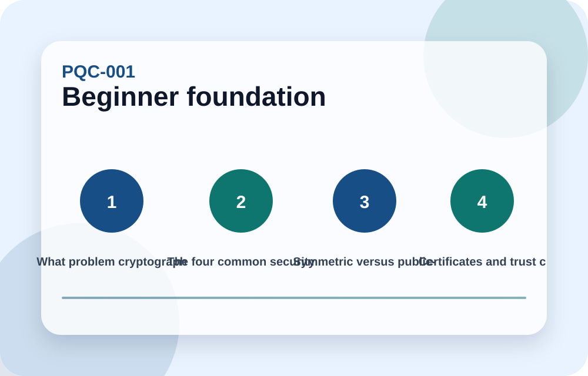
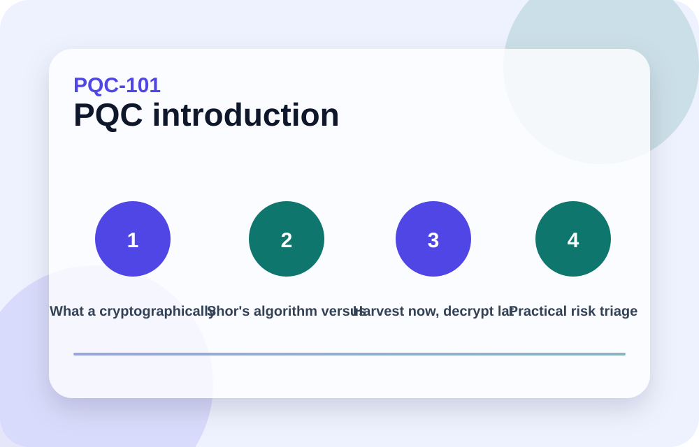
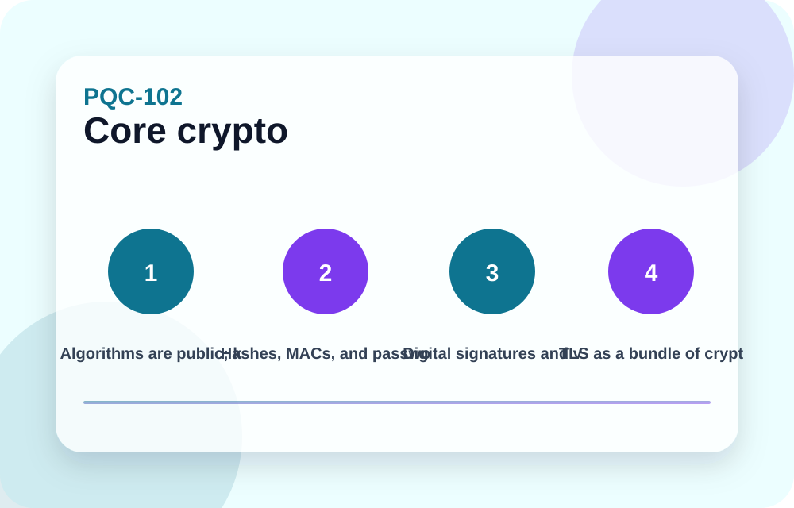
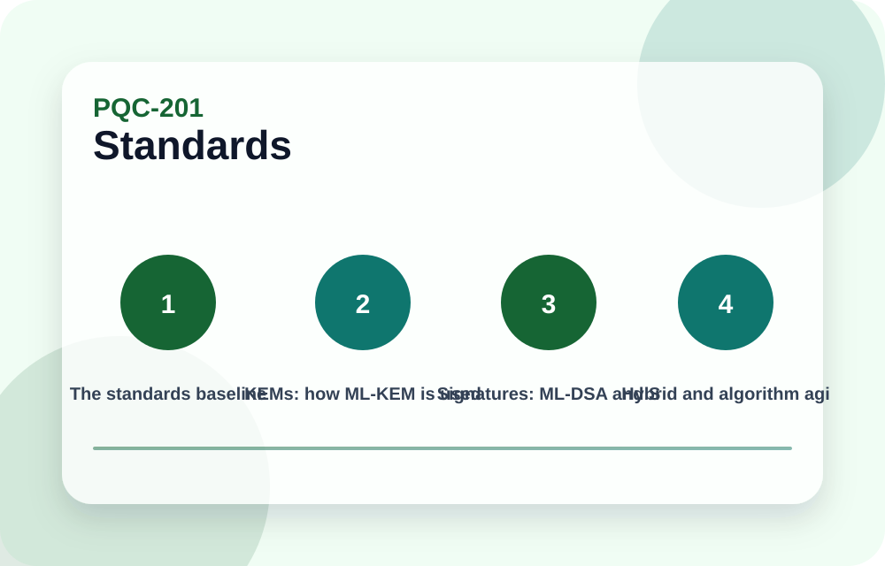
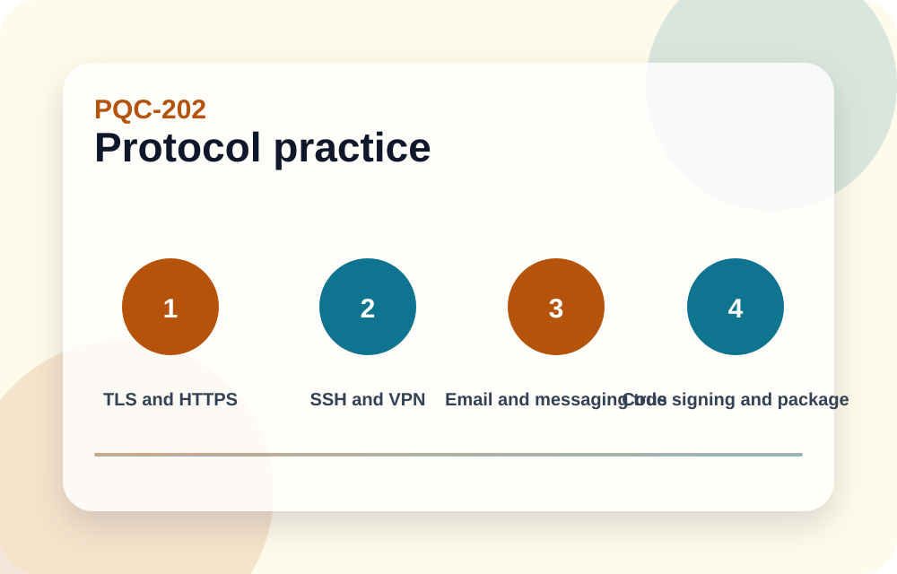
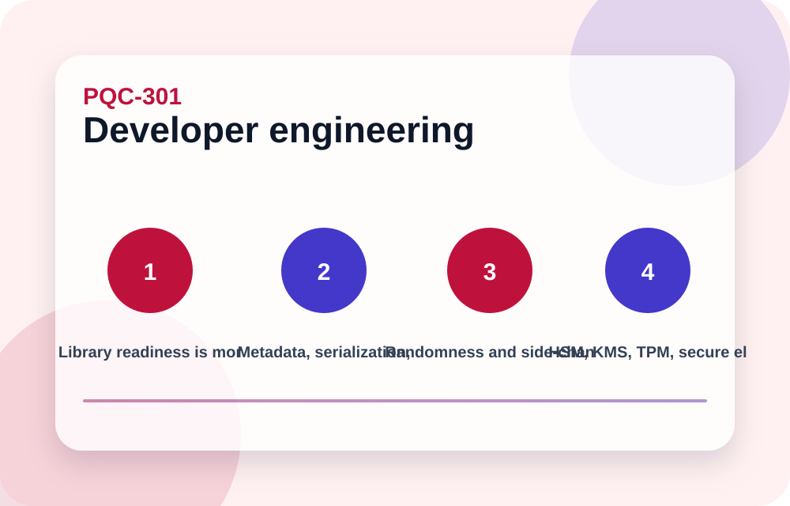
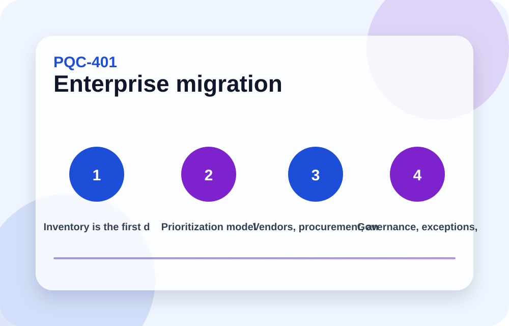
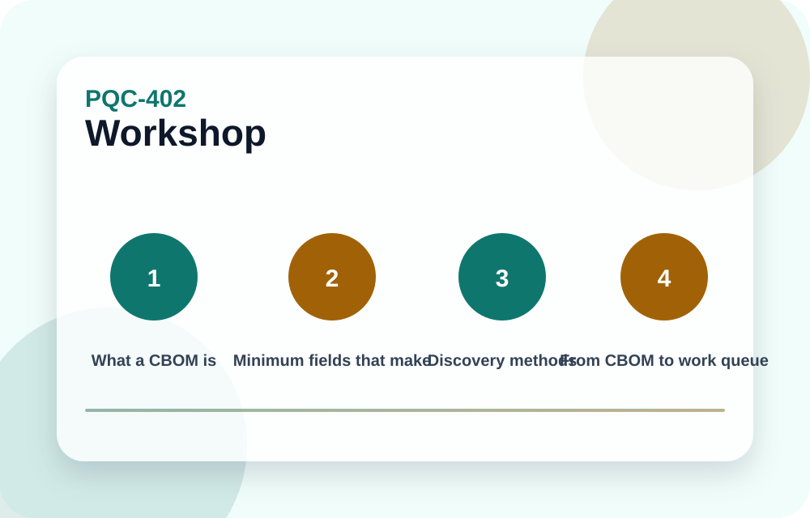
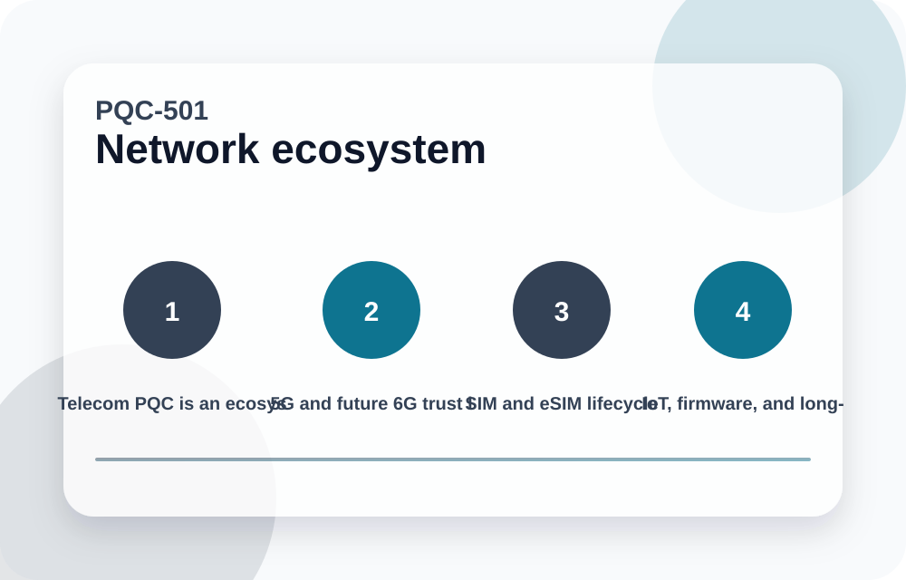
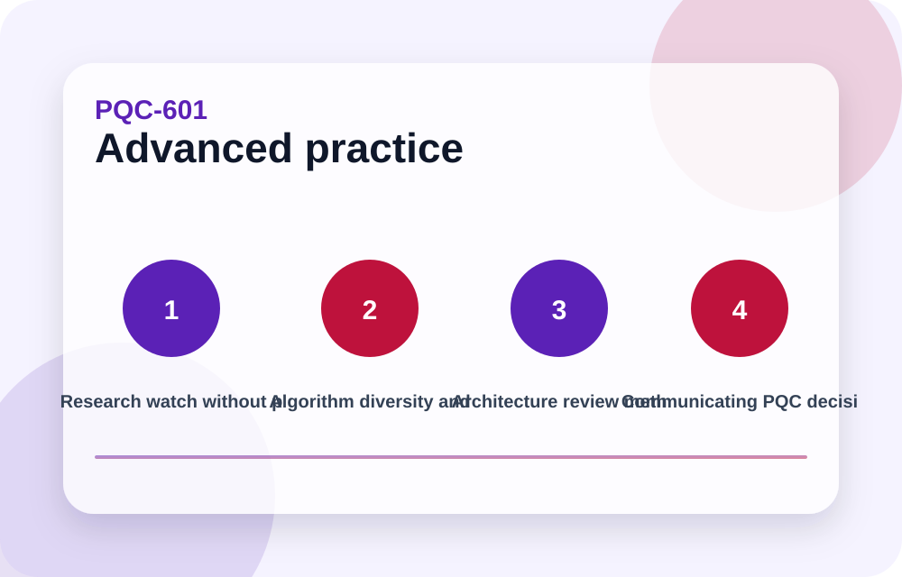

Start from zero
The first modules do not assume cryptography expertise. They explain trust, keys, certificates, TLS, and threat models before PQC algorithms.
A complete self-study path from basic cryptography to post-quantum standards, practical protocols, hands-on use cases, enterprise migration, telecom/SIM/eSIM/IoT ecosystems, and advanced architecture review.
The first modules do not assume cryptography expertise. They explain trust, keys, certificates, TLS, and threat models before PQC algorithms.
Each module includes practical labs for websites, VPNs, firmware, data at rest, cloud platforms, telecom, SIM/eSIM, IoT, and governance.
The standards trail links to NIST, NCCoE, and NSA sources. Production work still needs current vendor and security-team validation.

A non-assumed starting point for learners who need to understand what cryptography protects before learning why post-quantum cryptography matters.

A practical introduction to Shor, Grover, Q-day, harvest-now-decrypt-later, data lifetime, and why migration begins before a cryptographically relevant quantum computer exists.

A deeper lesson set for keys, hashes, signatures, certificates, TLS, and the implementation mistakes that cause real failures.

The NIST standards baseline, what ML-KEM, ML-DSA, SLH-DSA, HQC, and Falcon/FN-DSA are for, and how to avoid choosing algorithms blindly.

Concrete protocol-level examples showing where PQC changes appear and what breaks if the surrounding ecosystem is ignored.

Implementation guidance for libraries, APIs, parameters, serialization, side channels, randomness, test vectors, HSM/KMS dependencies, and safe rollout.

Scenario-driven labs that make the learner apply PQC concepts to realistic systems instead of memorizing terms.

A practical operating model for crypto inventory, prioritization, vendor management, governance, exceptions, rollout waves, monitoring, and evidence.

A hands-on module for creating a cryptographic bill of materials, classifying crypto use, and converting discovery into migration actions.

A system-level view of PQC in telecom, private networks, cellular identity, roaming, SIM/eSIM provisioning, IoT fleets, firmware signing, and long-lived devices.

Advanced guidance for tracking research, managing algorithm diversity, reviewing architectures, and producing accountable PQC readiness artifacts.
Use the modules in order if you are new. Every module has explanations, diagrams, concrete examples, common pitfalls, takeaways, revealable use-case labs, and a knowledge check.
This is educational content, not production cryptographic approval.